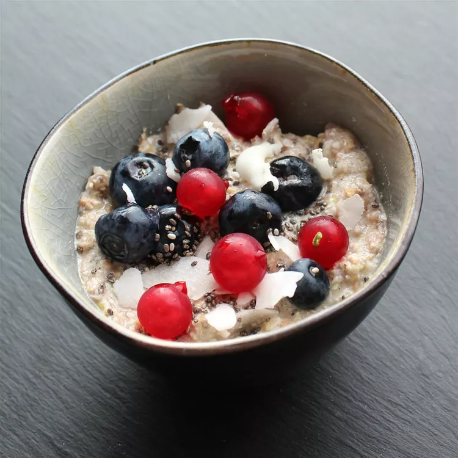

Tasty Oats

Description
A variation from overnight oats recipe from Alli Shircliff. This is for anyone who doesn't/can't eat oatmeal but wants a delicious, fast, and healthy breakfast. This uses buckwheat flakes--not the cereal flakes but rolled and flaked buckwheat. They look very similar to oatmeal flakes but are much smaller. Mix in agave and berries. Eat and enjoy!
Ingredients
- ¼ cup buckwheat flakes
- 2 teaspoons chia seeds
- 1 tablespoon coconut, divided
- 1 teaspoon flax seed meal
- ⅛ teaspoon ground cinnamon
- ⅓ cup milk
- 2 tablespoons mixed berries
- 1 teaspoon agave
Directions
- Combine buckwheat, chia seeds, 1 1/2 teaspoons coconut, flax seed meal, cinnamon, and vanilla powder in a jar; stir until well mixed. Stir in milk; cover. Place in the refrigerator, 8 hours to overnight.
- Stir buckwheat mixture. Heat in the microwave for 30 seconds. Stir in mixed berries, remaining coconut, and agave.